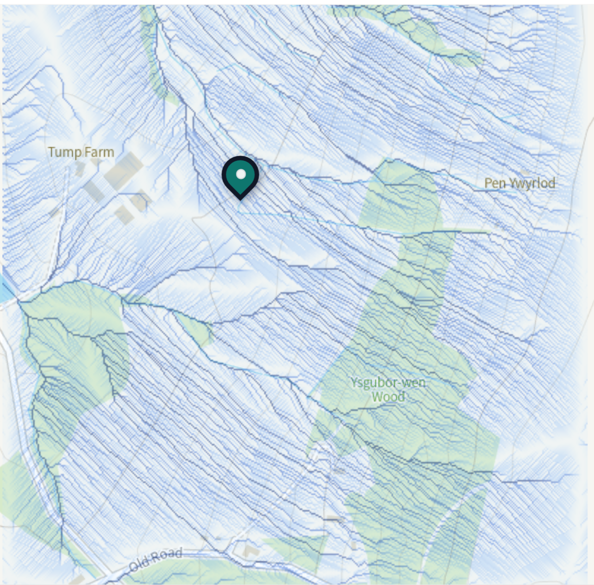

Tump Farm Water Project

Questions Visitors Might Ask
Yes, if it is small, measured, agreed with the landowner, and kept within environmental rules. Natural Resources Wales says abstractions of 20 cubic metres a day or less generally do not need an abstraction licence; larger amounts may need one.
The spring appears to be a steady flow where more porous, leaky rock meets less porous ground. Water moving through the leaky side is forced back to the surface where the ground conditions change. That kind of boundary can explain why springs appear in places like this.
Any water taken from the spring is water that does not continue straight on to the River Usk at that moment. The project should therefore aim to give something back: helping the farm hold more rainfall, reduce fast runoff, and support steadier water movement through the land.
Mostly, yes. The important question is timing.
If rain rushes off compacted ground in winter, it can add to high flows and flooding when the river already has plenty of water. If more rain soaks into soil and moves slowly underground, it can support streams, springs and the river later, when dry weather matters more.
Wildlife is better supported by steadier conditions than by sharp swings between winter floods and summer lows. Slowing runoff can also reduce erosion, keep more soil on the land, improve water quality, and reduce flood risk downstream.
Trees are low-tech, low-impact and useful in many ways at once. Leaves slow raindrops. Roots open soil channels. Tree belts can give shelter, habitat, shade, carbon storage and better soil structure, while also helping water soak in rather than racing away.
Mechanical earthworks can be useful in some places, but on heavy or compacted ground they may seal up, need maintenance, or create new risks. Trees are a safer first conversation.
The first aim is not to prove a perfect number. It is to build confidence step by step: measure the spring flow, observe wet and dry weather, test how fast water soaks into different soils, and record where runoff concentrates after rain.
Success would mean a small, respectful spring use alongside visible land improvements: more water soaking in, less muddy runoff, healthier soils, more trees, better habitat, and a project that visitors and young people can understand by walking the land.